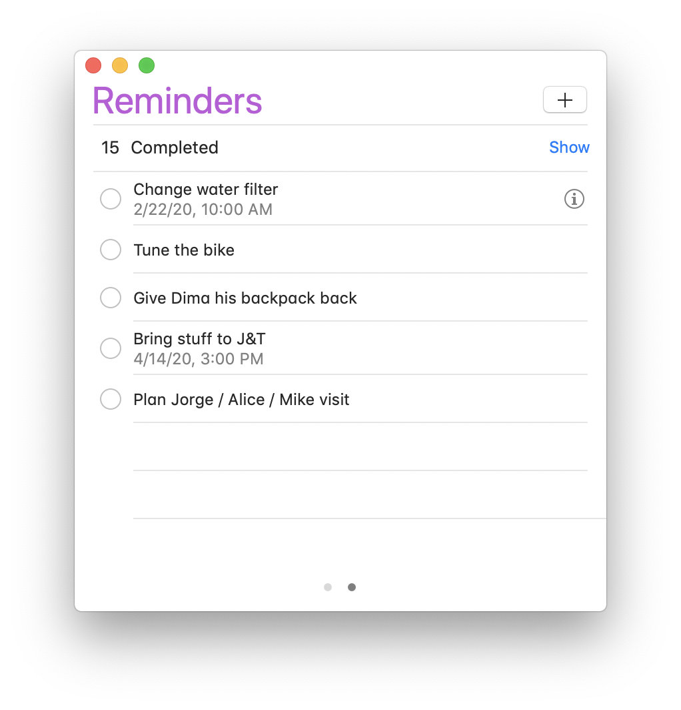
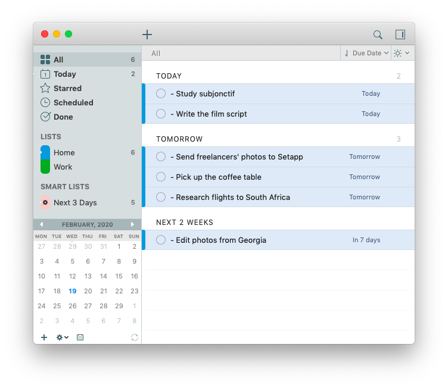

Agenda
- Unfinished business from brainstorm meeting on Sept. 30, 2021
- Introductions, share contact information
- Assign member roles
- Brainstorm important features for a to-do list
- Sketch to-do list interfaces
- Next steps/Deliverables for next meeting
- Lots of detailed information
- Questions, follow-up concerns
Members Present
Em Nam, Name Two, Name Three, Name Four
Minutes
-
Introductions: contact information is posted in the shared google spreadsheet, with names, phone numbers, emails. Member roles were added and updated for upcoming week.
-
Brainstorm To-do list features: listed the main features and categorized if features were important for minimal viable product.
Input new task: user can fill in template or form with important information of their task, generates a task that lists data and has not been completed yet
Check off completed task: check box that can be clicked and crosses off or deletes task from list
View list of all tasks: list of all the tasks needed to be completed (organize chronologically or by priority)
View details of specific task: clicking on a task will pull up more detailed information that may not fit on the master list of all the tasksAdditional features: being able to sort and filter tasks based on completed or not, ability to tag or group tasks and filter by tag, ability to set reminders and deadlines, celebratory visual when a task is completed, sharing completed achievements on social media, set priority to tasks
-
Interface Ideas: sketched possible layouts for look and features of to-do lists
  -
Next Steps: Research benefits of to-do lists, research target consumer (who uses to-do lists, why), narrow down useful versus counter-productive features of to-do list
-
Lots of Information:
Extra Details
This is a lot of text. It is important to note down, but not important enough for everyone to see. It takes up too much space and isn't important enough to always see. But the information should be recorded and stored and able to be looked up if anyone needs or wants to see it. -
Comments/Questions:
- How are we making sure code doesn't get trampled? We will set up share code repo on my GitHub.
- Where are the previous meeting minutes? In shared google folder
- What tech are we going to use? We plan to use HTML, CSS, and JavaScript to do WebDev because these are the basis for all the new tech products for WebDev.
Recordings of Meeting
Audio for the above video: